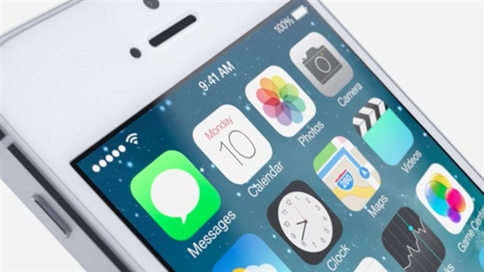

Designspiration is a website meant to help designers inspire one another. This website has a normal search feature, where you can look up images using words that have been cataloged with that image. However, images can also found based on color. When searching this way, the user is provided a color chart where they can choose up to 5 colors to search at once. I think this is an interesting feature that can help designers think about design when looking at other peoples work.
Switchcam.com is a music website which looks for videos on the internet taken at concerts. This website combines different angels of a concert to give the viewer a full view of what it would like to be at the concert. This website is interesting because they are able to make an enhanced experience for the viewer while keeping the authenticity of the concert going experience.
This story talks about the new operating system layout that Apple is releasing for its mobile devices. The story focuses on the comparison between the older operating system layouts verses the new i0S 7. The older operating systems tried to make icons and textures resemble things that users would find in the real world, for example: A shutter for the camera, Green felt in the game room. However, Apple now believes that users have come to the point where they don't need these kind of visual cues to help them feel comfortable with the phone. I find it interesting to see this kind of shift going on in our culture. These types of mobile devices have only been around for a few years, however, they have become so a part of our everyday lives that we almost intuitively use them.